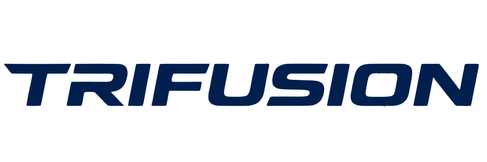

Pengembangan Kapal Tak Berawak (ASV) Coast Guard 900mm
Sistem Navigasi Otonom Berbasis Computer Vision & ArduPilot dengan Arsitektur Edge Companion Computer
Desain Lambung & Tata Letak Dek Atas 900 × 304 mm
Stabilitas hidrodinamika, modularitas akses baterai, dan low-center-of-gravity.
📐 Spesifikasi Lambung
- Panjang Lambung: 900 mm (Cut-list verified)
- Lebar Maksimum: 304 mm (Optimasi stabilitas lateral)
- Struktur Sekat: 7 Sekat transversal (Sekat 0 Haluan s.d. Sekat 6 Buritan)
- Material: Polywood ringan berlapis epoxy & fiberglass waterproof

⚓ Pembagian Modular Dek
- Haluan (Sekat 0-1): Dudukan pedestal dekoratif Coast Guard simetris
- Tengah (Sekat 1-4): Kabin ruang kemudi modular (Akses cepat baterai & ESC)
- Atap Kabin: Mast radar, kamera permukaan Logitech, & antena MAVLink
- Buritan (Sekat 4-6): Helipad mini & kompartemen kemudi rudder servo

Arsitektur Hibrida: Pixhawk + Raspberry Pi 5
Pemisahan tegas antara kontrol aktuator real-time dan inferensi visi otonom.
🎮 Low-Level Actuator (Pixhawk)
- Firmware: ArduRover Boat Mode (ArduPilot)
- Aktuator: Servo Kemudi (RC1) & ESC Brushless Thruster (RC3)
- Safety Override: Manual RC Takeover transmitter memiliki prioritas tertinggi
- Failsafe: Auto-neutral throttle saat kehilangan sinyal kontrol
🧠 High-Level Companion (Raspberry Pi 5)
- Koneksi Serial: MAVLink via USB Serial (/dev/ttyACM0)
- Peran: Menjalankan model YOLO, pelacak target, & visual servoing
- Telemetry Bridge: WebSocket & REST API untuk monitoring telemetri live
- No-GPS Independence: Bekerja murni menggunakan kamera tanpa ketergantungan GPS
Computer Vision & Deteksi Buoy Real-Time
Ekstraksi koordinat rintangan dan gerbang jalur menggunakan Ultralytics YOLOv8.
🎯 Model Deteksi Buoy (YOLOv8)
- Kelas Objek:
red_buoy(Buoy Merah) &green_buoy(Buoy Hijau) - Ekstraksi Target: Titik tengah gerbang (Midpoint) dihitung langsung dari koordinat piksel
- Single Buoy Offset: Otomatis menghitung jalur aman saat hanya 1 buoy terlihat
- Visual Target Tracker: Mempertahankan memori target selama 0.8s saat buoy keluar frame
🎥 Dual Camera Pipeline
- Surface Camera (Logitech C920): Stream MJPEG 20-30 FPS untuk navigasi permukaan
- Underwater Camera: Inspeksi bawah air & broadcast frame fallback via WebSocket
- AR Lane Overlay: Visualisasi garis tengah jalur (Google Maps style) pada video feed
- Optimasi Bandwidth: Metadata JSON bounding box dikirim terpisah dari raw stream video
Algoritma Navigasi Loop & Visual Servoing
Penyesuaian kemudi proporsional dinamis dan transisi sektor cerdas.
🔄 Kontrol Kemudi & Throttle Dinamis
- Visual Servoing: Error lateral
(target_x - center_x)dikonversi ke PWM Servo - Throttle Adaptif: Meluncur kencang saat jalur lurus, melambat presisi saat berbelok tajam
- PD Compass Damping: Menstabilkan orientasi sudut saat transisi antar gerbang
- Anti-Stuck Failsafe: Otomatis melakukan manuver mundur jika kapal mendeteksi benturan/macet
🗺️ Alur Navigasi Rute 10 Gerbang
- 1. Slalom Kanan (Gate 1 → 2 → 3): Navigasi zig-zag menyusuri buoy merah & hijau
- 2. Sudut Barat-Laut (Gate 3 → 4): Belok 310° NW presisi masuk koridor atas
- 3. Koridor Lurus Atas (Gate 4 → 5 → 6 → 7): Kecepatan jelajah tinggi menyusuri Y=10.0m
- 4. Sudut Barat-Daya (Gate 7 → 8): Belok 230° SW masuk slalom kiri
- 5. Slalom Kiri & Finish (Gate 8 → 9 → 10): Menembus gerbang akhir menuju area finish
Dashboard Web Real-Time & Cloudflare Tunnel
Pemantauan visual dan status instrumen kapal dari darat secara aman dan real-time.
💻 Dashboard Frontend (Vercel)
- Single Viewport: Kamera surface full-screen dengan overlay visual interaktif
- Telemetri Live: Menampilkan mode kemudi, status arming, PWM servo, dan kompas
- Canvas Overlay: Menampilkan bounding box buoy, garis tengah, dan target pin
- Indikator Koneksi: Real-time status heartbeat bridge lokal & MAVLink
🌐 Konektivitas & Keamanan Jaringan
- Cloudflare Tunnel: Mengamankan akses stream Raspberry Pi ke internet tanpa port forwarding
- WebSocket Telemetry: Pembaruan data instrumen berkecepatan tinggi (>10 Hz)
- go2rtc / WebRTC Stream: Latensi video ultra-rendah (<150 ms) untuk pilot darat
- Supabase Integration: Penyimpanan log performa misi dan status telemetri
Hasil Validasi Simulasi Arena Kolam KKI 30 × 30 m
Evaluasi batch navigasi otonom dengan sensor pembatas dinding dan penghitung gate.
📊 Metrik Performa Simulasi
- Kecepatan Maksimum: 2.20 m/s (Propulsi penuh bermanuver lincah)
- Total Waktu Lintasan: ±28.7 detik untuk menyelesaikan seluruh rute 10 gate
- Wall Collision: 0 Kali (Zero Wall Hits pada arena pembatas kolam)
- Valid Gate Clearance: Berhasil melewati gerbang slalom dan koridor secara konsisten
🛠️ Keunggulan Arsitektur Sistem
- Bebas Ketergantungan GPS: Tidak terpengaruh error GPS indoor/kolam (3-6m)
- Kekebalan Drift Kompas: Panduan visual YOLO mengoreksi deviasi arah secara mandiri
- Transparansi Log: Setiap frame mencatat status navigasi, koordinat target, dan aksi kemudi
- Fail-Safe Tangguh: Sambungan MAVLink otomatis pulih jika terjadi fluktuasi jaringan/serial
Siap Berlaga di KKI 2026
Integrasi mekanikal lambung 900mm, persepsi cerdas YOLOv8, dan kontrol aktuasi Pixhawk telah teruji kokoh, mandiri tanpa GPS, dan siap berlomba.
Terima Kasih • Tim ASV KKI 2026